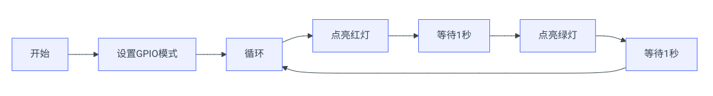

树莓派开发环境搭建
Lab1实验报告：Raspberry Pi初体验与环境搭建实验¶
一、实验介绍¶
本次实验将配置后续实验用到的软硬件环境，包括操作系统、网络、远程连接等。
二、实验目标¶
- 熟悉Raspberry Pi硬件组成及其引脚布局。
- 完成Raspberry Pi OS镜像的下载与烧录。
- 配置Wi-Fi，确保能够访问互联网。
三、实验步骤¶
（1）硬件准备与检查¶
- 确认所需材料：
- Raspberry Pi 4 Model B
- microSD卡
- 电源适配器（最好使用官方提供的USB-C电源,否则可能出问题）
- HDMI显示器及HDMI线缆
-
键盘和鼠标
-
检查硬件状态：
- 插入microSD卡到Raspberry Pi的卡槽中。
- 如果是使用过的卡，先用SDFormatter工具格式化。

- 如果是使用过的卡，先用SDFormatter工具格式化。
- 连接显示器、键盘和鼠标（如果打算使用GUI）。
- 将电源线插入Raspberry Pi，并确保另一端连接到合适的电源插座上。
（2）操作系统安装¶
- 下载Raspberry Pi Imager工具：
-
访问Raspberry Pi官方网站下载Imager工具。

-
选择并写入OS镜像：
- 打开Raspberry Pi Imager，点击“CHOOSE OS”按钮，选择推荐的Raspberry Pi OS (32-bit)版本。
- 点击“CHOOSE STORAGE”，挑选之前准备好的microSD卡作为存储介质。
- 确认无误后，点击“WRITE”开始烧录过程。请耐心等待，直到提示写入完成。
- 配置屏幕参数：
-
在microSD卡的根目录下，找到
config.txt文件，编辑并添加以下内容：>在Bash hdmi_cvt 1024 600 60 6 0 0 0 0这里填入实际显示屏的分辨率，不同 显示器分辨率不同。 -
保存文件后，将microSD卡插回Raspberry Pi中。
-
初次启动与初始化设置：
- 将烧录好OS镜像的microSD卡重新插回Raspberry Pi后，给它通电。
- 第一次启动时，根据屏幕上的指示进行语言、地区、时区等基本信息的配置。
（3）网络配置¶
- 连接Wi-Fi：
- 在命令行中输入
sudo raspi-config打开配置菜单。 - 选择“Network Options”，然后按照提示输入您的Wi-Fi SSID和密码。
-
或者直接编辑
/etc/wpa_supplicant/wpa_supplicant.conf文件添加Wi-Fi信息。 -
验证网络连接：
- 使用
ping www.bing.com测试是否能成功访问外部网站。
（4）配置开发环境¶
- 更新软件包列表：
-
执行
sudo apt-get update刷新本地数据库以获取最新的软件包信息。 -
升级已安装的软件包：
-
使用
sudo apt-get upgrade命令来更新所有现有的软件包至最新版本。 -
安装额外的开发工具：
- 安装Python相关工具：
- 安装Git用于版本控制：
Bash - 安装Vim编辑器：
bash sudo apt-get install vim - 安装远程连接工具：
- 启动SSH服务：
Bash - 验证SSH服务是否正常运行：
Bash - 设置SSH服务开机自启动：
bash sudo systemctl enable ssh - 在本地通过vscode连接远程Raspberry Pi：
- 安装Remote - SSH插件。
- 在树莓派终端运行
ifconfig命令查看IP地址。 - 使用
Ctrl+Shift+P打开命令面板，输入Remote-SSH: Connect to Host，然后输入Raspberry Pi的IP地址和用户名。 - 输入密码后，即可通过VSCode连接到远程的Raspberry Pi。
- 把
ssh-rsa公钥添加到~/.ssh/authorized_keys文件中，实现无密码登录。 - 远程可视化开发:
- 在本地安装VNC Viewer。
- 在树莓派上启用VNC Server： 
- 确保电脑和 Raspberry 在同一局域网。打开软件，在框内输入获取到的 Raspberry Pi ip 地址，回车。
- 输入用户名和密码，即可远程连接到 Raspberry Pi 的桌面环境。
四、总结¶
本实验完成了Raspberry Pi的初步设置，包括操作系统的安装、网络的配置以及开发环境的搭建。